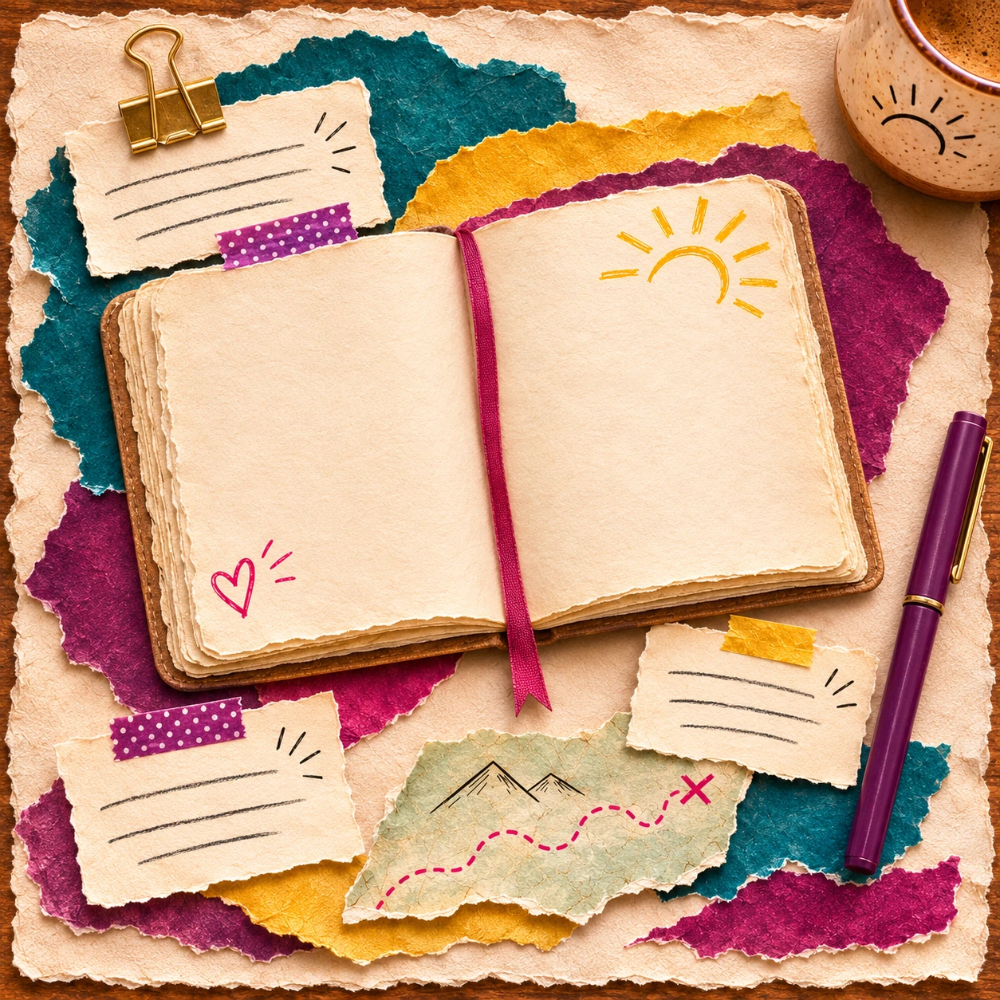
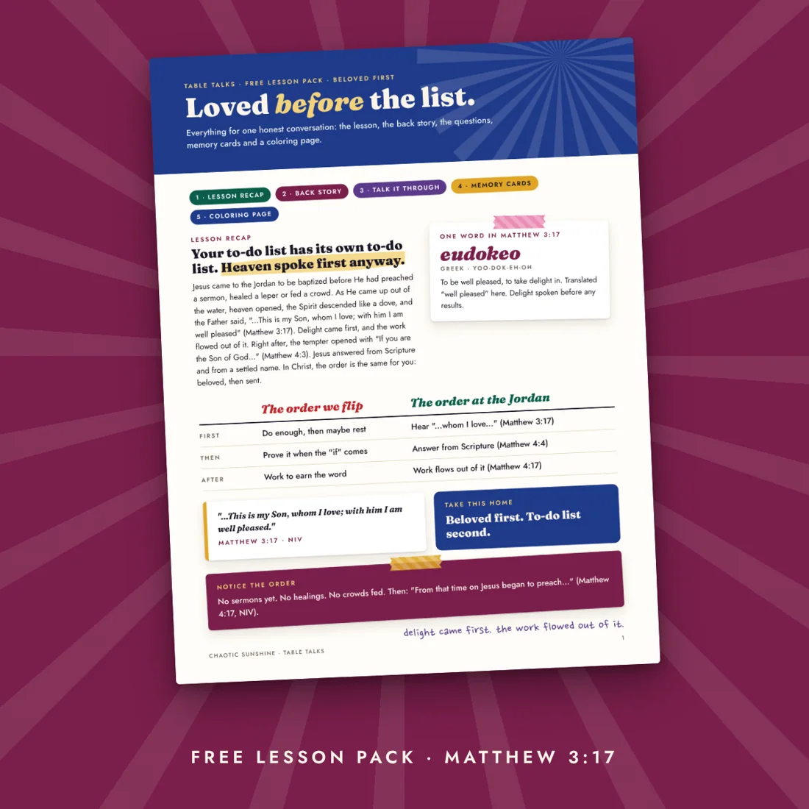
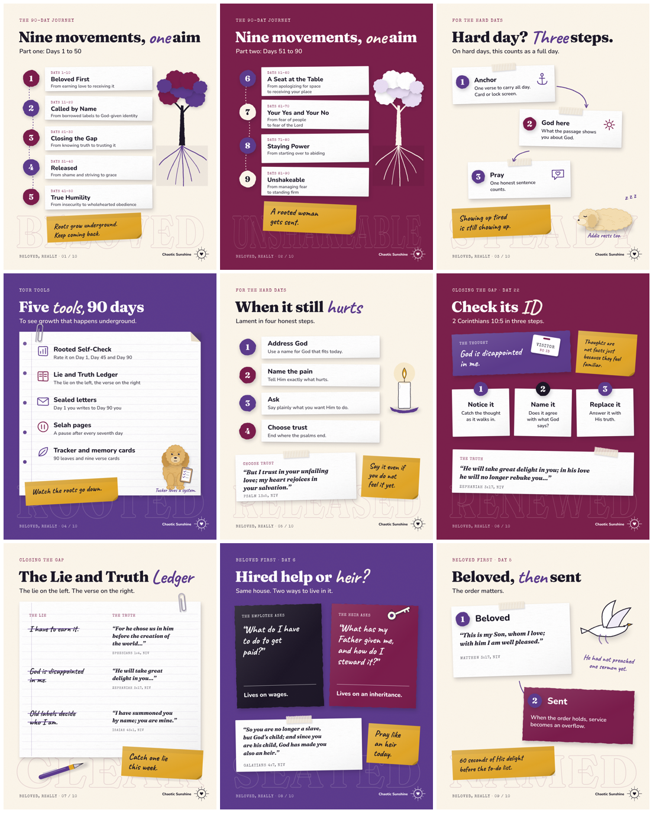

Welcome to Chaotic Sunshine
An illustrated faith journal and a little free digital library for your beautifully messy life. Explore Scripture, ask your real questions, and find something good to carry into your day.
The coffee went cold. Your brain opened fourteen tabs. You still want time with God. Pull up a chair—there’s a page for that kind of day, too.
90 Christian devotions · 11 free guides · No signup needed to begin.
A little sunshine in your inbox? Peek at the monthly letter ↓
Your next few minutes, made simple
Bring a question, a tired heart, or your wonderfully scattered attention. Flip a card to find a devotion for the day you’re in.
Find my page →Read the Scripture passage, then explore an honest reflection. Stay with a question or borrow a prayer when words are hard to find.
Explore the devotions →Try one small response. Tuck a printable beside your Bible. Send a reading to the friend who just texted, “It’s been a day.”
Find a guide to keep →Leave with a verse to sit with, a question worth asking, or one small thing to try.
Go on. Have a look around.
Read something honest. Open the library doors. Find a page you’ll want to keep.
90 devotions with Scripture, honest questions, and room for a little sass. Stay for a minute or settle in.
Explore the devotions →
11 free Bible guides, conversation starters, and seasonal readers. Look inside before you download.
Open the library →
Illustrated teaching sheets to print, spread out, and use beside your Bible. Yes, you can write in the margins.
See the teaching illustrations →